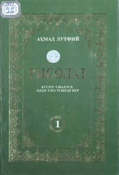

R1Muhammad sollallohu alayhi vasallamning muborak hayoti va risolat tongi haqidagi asarning birinchi jildi.
Ushbu kitob turkiyalik olim va yozuvchi Ahmad Lutfiy Qozonchining olti jildlik mashhur 'Risolat' asarining birinchi jildi bo'lib, Payg'ambarimiz Muhammad sollallohu alayhi vasallamning tug'ilishidan tortib risolat tongi otgunga qadar bo'lgan hayotini hikoya qiladi. Asarda Rasulullohning hayot yo'llari, chekkan mashaqqatlari va insoniyatga namuna bo'ladigan fazilatlari mohirlik bilan bayon etilgan. Kitob keng kitobxonlar ommasiga mo'ljallangan bo'lib, ma'rifiy va tarbiyaviy ahamiyatga ega.